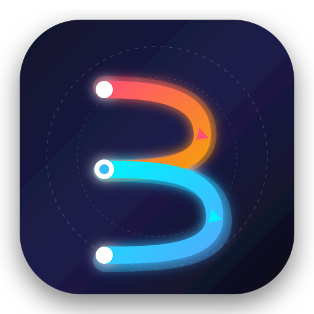
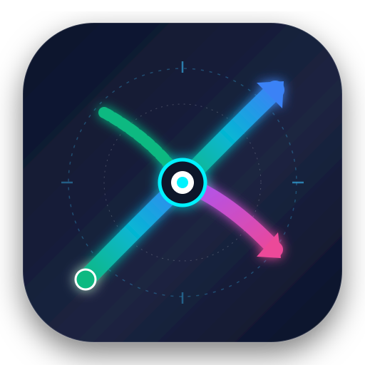
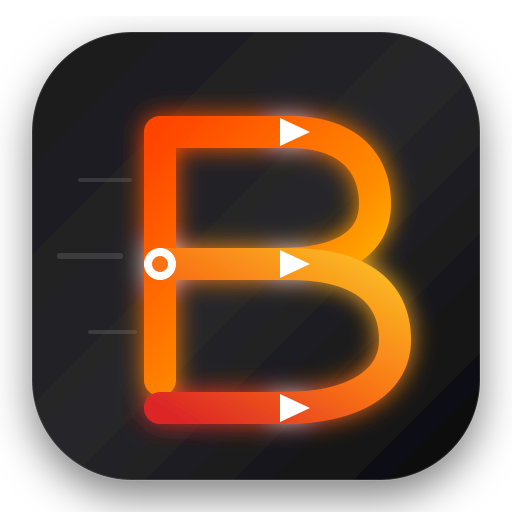
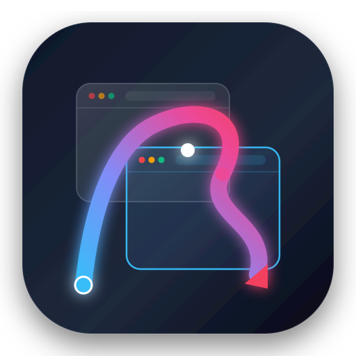
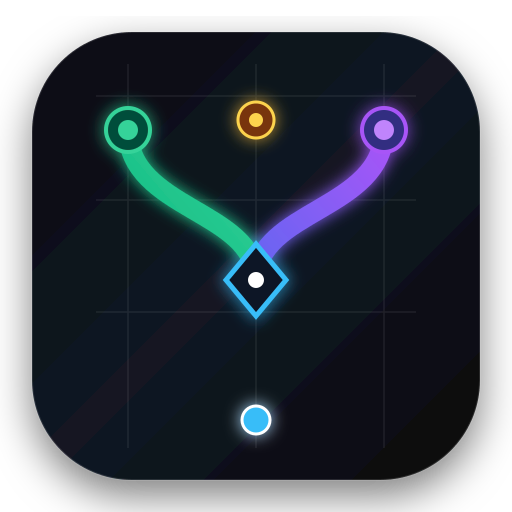

Exploring 5 design directions for Browsify: ultra-lean URL routing, multi-profile launching, sub-5µs speed, and macOS native elegance.

A stylized monogram 'B' where the vertical stem represents incoming URLs, branching cleanly into two luminous loops: Sunset Coral (Work / Chromium) and Electric Cyan (Personal / Firefox). Delivers Apple-grade macOS aesthetic and clear routing semantics.

An outer radar dial framing a curved compass cross with glowing trajectory nodes. Emphasizes navigational certainty—guaranteeing that every link always lands in the exact intended browser context.

High-speed aerodynamic vector ribbons looping into a bold 'B' with forward arrowheads. Highlights Browsify's core technical achievement: 2.3 µs routing latency and native Rust engine performance.

Two layered translucent browser window silhouettes intersected by an upward URL trajectory beam. Communicates multi-browser orchestration and seamless desktop multitasking.

Minimalist geometric fork with a diamond routing crystal and distinct circular endpoint nodes (Personal, Work, Default). Inspired by the UNIX philosophy and declarative routing architecture.